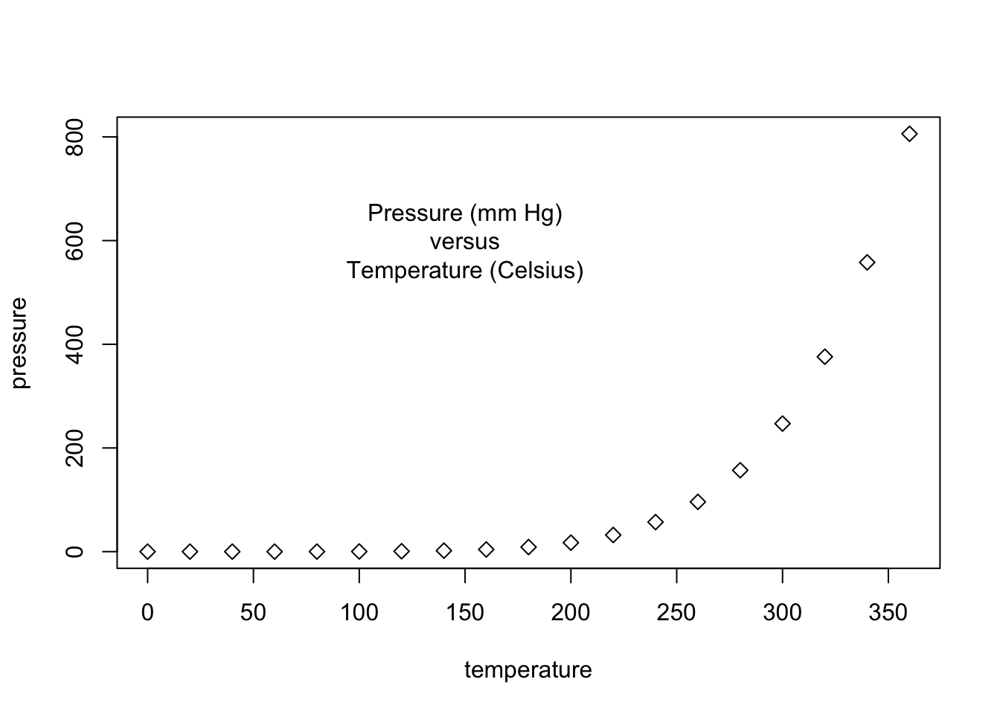
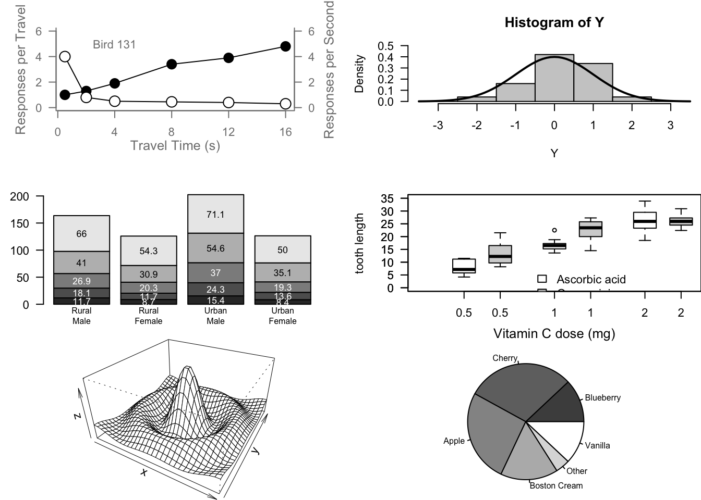
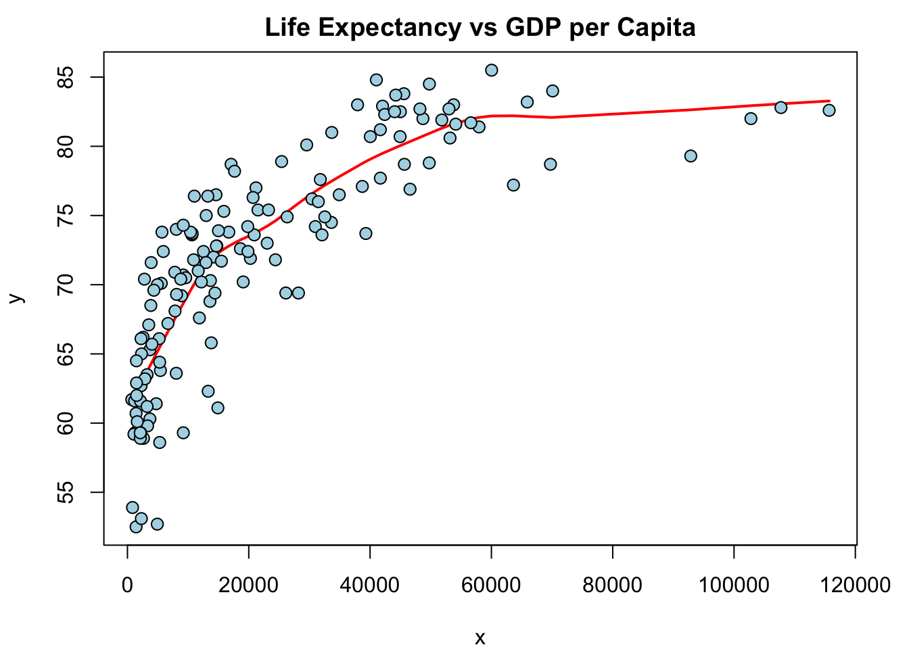
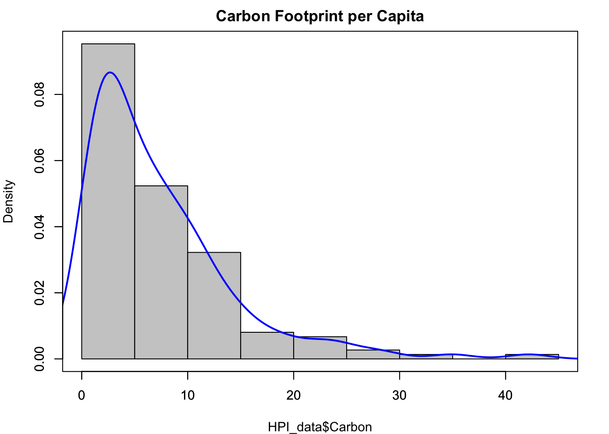
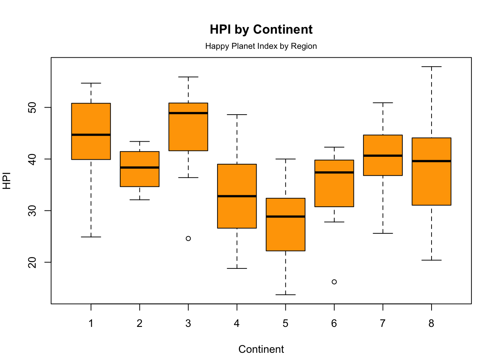
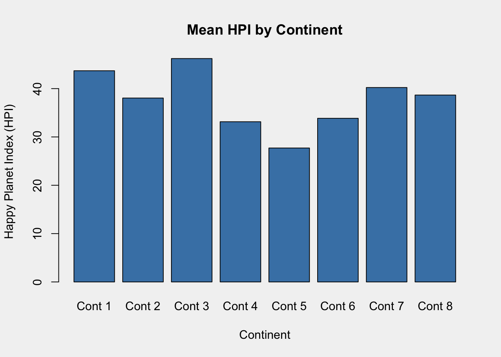
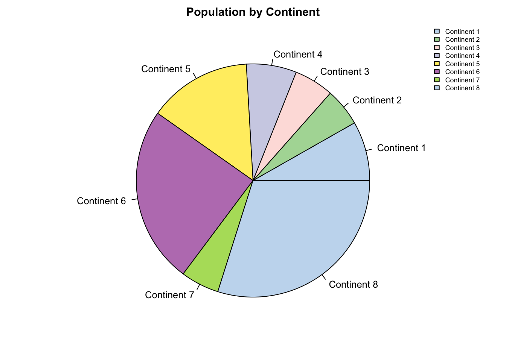
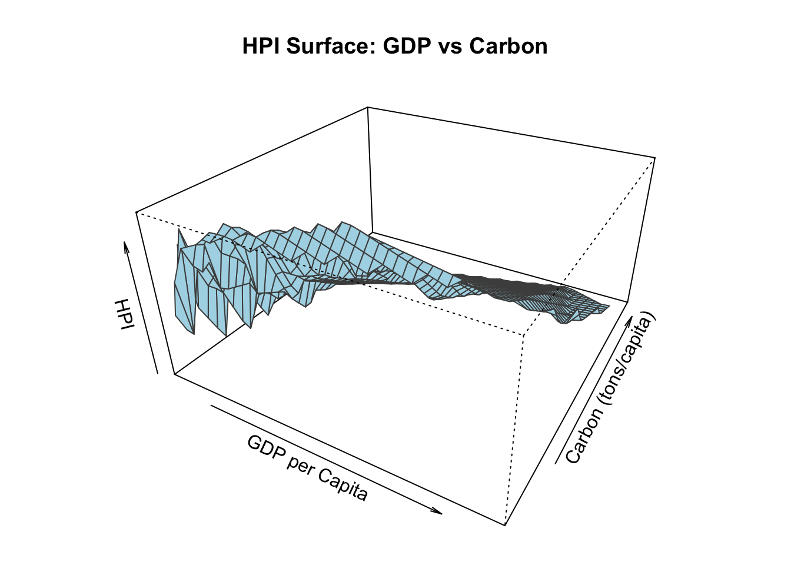

### Paul Murrell's R examples (selected)
## Start plotting from basics
# Note the order
plot(pressure, pch=16) # Can you change pch?
text(150, 600,
"Pressure (mm Hg)\nversus\nTemperature (Celsius)")Assignment 02
1 Run murrell01.R
Run Paul Murrell’s RGraphics basic R programs (murrell01.R)
- Be sure to run line by line and note the changes
- Pay attention to the comments and address the question if there is one
- Plotting functions (note: exercise using the happy planet data set http://happyplanetindex.org)
1.1 Original
Original Code with questions addressed
Change pch
### Paul Murrell's R examples (selected)
## Start plotting from basics
# Note the order
plot(pressure, pch=5) # Can you change pch?
text(150, 600,
"Pressure (mm Hg)\nversus\nTemperature (Celsius)")
# Examples of standard high-level plots
# In each case, extra output is also added using low-level
# plotting functions.
#
# Setting the parameter (3 rows by 2 cols)
par(mfrow=c(3, 2))
# Scatterplot
# Note the incremental additions
x <- c(0.5, 2, 4, 8, 12, 16)
y1 <- c(1, 1.3, 1.9, 3.4, 3.9, 4.8)
y2 <- c(4, .8, .5, .45, .4, .3)
# Setting label orientation, margins c(bottom, left, top, right) & text size
par(las=1, mar=c(4, 4, 2, 4), cex=.7)
plot.new()
plot.window(range(x), c(0, 6))
lines(x, y1)
lines(x, y2)
points(x, y1, pch=16, cex=2) # Try different cex value?
points(x, y2, pch=21, bg="white", cex=2) # Different background color
par(col="gray50", fg="gray50", col.axis="gray50")
axis(1, at=seq(0, 16, 4)) # What is the first number standing for?
axis(2, at=seq(0, 6, 2))
axis(4, at=seq(0, 6, 2))
box(bty="u")
mtext("Travel Time (s)", side=1, line=2, cex=0.8)
mtext("Responses per Travel", side=2, line=2, las=0, cex=0.8)
mtext("Responses per Second", side=4, line=2, las=0, cex=0.8)
text(4, 5, "Bird 131")
par(mar=c(5.1, 4.1, 4.1, 2.1), col="black", fg="black", col.axis="black")
# Histogram
# Random data
Y <- rnorm(50)
# Make sure no Y exceed [-3.5, 3.5]
Y[Y < -3.5 | Y > 3.5] <- NA # Selection/set range
x <- seq(-3.5, 3.5, .1)
dn <- dnorm(x)
par(mar=c(4.5, 4.1, 3.1, 0))
hist(Y, breaks=seq(-3.5, 3.5), ylim=c(0, 0.5),
col="gray80", freq=FALSE)
lines(x, dnorm(x), lwd=2)
par(mar=c(5.1, 4.1, 4.1, 2.1))
# Barplot
par(mar=c(2, 3.1, 2, 2.1))
midpts <- barplot(VADeaths,
col=gray(0.1 + seq(1, 9, 2)/11),
names=rep("", 4))
mtext(sub(" ", "\n", colnames(VADeaths)),
at=midpts, side=1, line=0.5, cex=0.5)
text(rep(midpts, each=5), apply(VADeaths, 2, cumsum) - VADeaths/2,
VADeaths,
col=rep(c("white", "black"), times=3:2),
cex=0.8)
par(mar=c(5.1, 4.1, 4.1, 2.1))
# Boxplot
par(mar=c(3, 4.1, 2, 0))
boxplot(len ~ dose, data = ToothGrowth,
boxwex = 0.25, at = 1:3 - 0.2,
subset= supp == "VC", col="white",
xlab="",
ylab="tooth length", ylim=c(0,35))
mtext("Vitamin C dose (mg)", side=1, line=2.5, cex=0.8)
boxplot(len ~ dose, data = ToothGrowth, add = TRUE,
boxwex = 0.25, at = 1:3 + 0.2,
subset= supp == "OJ")
legend(1.5, 9, c("Ascorbic acid", "Orange juice"),
fill = c("white", "gray"),
bty="n")
par(mar=c(5.1, 4.1, 4.1, 2.1))
# Persp
x <- seq(-10, 10, length= 30)
y <- x
f <- function(x,y) { r <- sqrt(x^2+y^2); 10 * sin(r)/r }
z <- outer(x, y, f)
z[is.na(z)] <- 1
# 0.5 to include z axis label
par(mar=c(0, 0.5, 0, 0), lwd=0.5)
persp(x, y, z, theta = 30, phi = 30,
expand = 0.5)
par(mar=c(5.1, 4.1, 4.1, 2.1), lwd=1)
# Piechart
par(mar=c(0, 2, 1, 2), xpd=FALSE, cex=0.5)
pie.sales <- c(0.12, 0.3, 0.26, 0.16, 0.04, 0.12)
names(pie.sales) <- c("Blueberry", "Cherry",
"Apple", "Boston Cream", "Other", "Vanilla")
pie(pie.sales, col = gray(seq(0.3,1.0,length=6))) 
# Exercise: Can you generate these charts individually? Try these functions
# using another dataset. Be sure to work on the layout and margins- Exercise
- Generate these charts individually All, with HPI dataset
- Use a different dataset All
- Optimize the layout an margins All
- Try different cex value? All
- Different background color exercise04, bar charts
- In
axis(1, at=seq(0, 16, 4))What is the first number standing for? This the side of the plot that the axis is drawn.
HPI_data <- read.csv("HPI_data.csv")
par(mar = c(4, 4, 2, 2), cex = 1)
# Remove rows with NA in GDP or Life Expectancy
plot_data <- na.omit(HPI_data[, c("GDP_capita", "Life_exp")])
x <- plot_data$GDP_capita
y <- plot_data$Life_exp
plot(x, y, pch = 21, bg = "lightblue", col = "blue",
main = "Life Expectancy vs GDP per Capita")
lines(lowess(x, y, f = 2/3), col = "red", lwd = 2)
points(x, y, pch = 21, bg = "lightblue", cex = 1.2)
par(mar = c(4, 4, 2, 2), cex = 0.9)
hist(HPI_data$Carbon, col = "gray80", main = "Carbon Footprint per Capita", freq = FALSE)
lines(density(HPI_data$Carbon, na.rm = TRUE), col = "blue", lwd = 2)
axis(1); axis(2); box()
text(x = max(HPI_data$Carbon, na.rm = TRUE)*0.8, y = 0.5, labels = "Density Curve", col = "blue", cex = 0.9)
op <- par(mar = c(4, 4, 4.5, 2), cex = 0.9)
boxplot(HPI ~ as.factor(Continent), data = HPI_data,
col = "orange",
main = "HPI by Continent",
ylab = "HPI", xlab = "Continent")
mtext("Happy Planet Index by Region", side = 3, line = 0.5, cex = 0.7)
par(op)op <- par(mar = c(5, 4, 4, 2) + 0.1, bg = "gray95")
# Aggregate HPI by Continent
mean_hpi <- tapply(HPI_data$HPI, HPI_data$Continent, mean, na.rm = TRUE)
# Barplot of mean HPI by continent
barplot(mean_hpi,
col = "steelblue",
main = "Mean HPI by Continent",
ylab = "Happy Planet Index (HPI)",
xlab = "Continent",
names.arg = paste("Cont", names(mean_hpi)))
par(op)op <- par(mar = c(2, 2, 2, 2), cex = 0.8)
pie_data <- aggregate(Population ~ Continent, data = HPI_data, sum)
soft_colors <- c("#C6DBEF", "#AED9A4", "#FDE0DD", "#D0D1E6", "#FFED6F", "#BC80BD", "#B3DE69")
pie(pie_data$Population,
labels = paste("Continent", pie_data$Continent),
col = soft_colors,
main = "Population by Continent")
legend("topright", legend = paste("Continent", pie_data$Continent), fill = soft_colors, cex = 0.7, bty = "n")
par(op)# Load required package
if (!requireNamespace("akima", quietly = TRUE)) install.packages("akima")
library(akima)
# Filter and clean data
df <- na.omit(HPI_data[, c("GDP_capita", "Carbon", "HPI")])
# Interpolate to create regular grid
interp_result <- with(df, interp(x = GDP_capita, y = Carbon, z = HPI, duplicate = "mean"))
# 3D surface plot
op <- par(mar = c(1, 1, 4, 1))
persp(interp_result$x, interp_result$y, interp_result$z,
theta = 30, phi = 30, expand = 0.5,
col = "lightblue", border = "gray30",
xlab = "GDP per Capita", ylab = "Carbon (tons/capita)", zlab = "HPI",
main = "HPI Surface: GDP vs Carbon")
par(op)1.2 Modified Code
Modfied murrell01.R with all the plots
- Plotting functions (note: exercise using the happy planet data set http://happyplanetindex.org)
- par()
- lines()
- points()
- axis()
- box()
- text()
- mtext()
- hist()
- boxplot()
- legend()
- persp()
- names()
- pie()
- Post your works on your blog/website. Read Murrell’s R Graphics for reference
| Function | Scatterplot: Life Exp vs GDP | Histogram: Carbon footprint | Boxplot: HPI by Continent | Barplot: Mean HPI by Continent | Pie chart: Population by Continent | 3D Surface: HPI ~ GDP + Carbon |
|---|---|---|---|---|---|---|
| par.. | Yes | Yes | Yes | Yes | Yes | Yes |
| lines.. | Yes (lowess) | Yes (density) | No | No | No | No |
| points.. | Yes (pch, bg) | No | No | No | No | No |
| axis.. | No | Yes | No | No | No | No |
| box.. | No | Yes | No | No | No | No |
| text.. | No | Yes | No | No | No | No |
| mtext.. | No | No | Yes | No | No | No |
| hist.. | No | Yes | No | No | No | No |
| boxplot.. | No | No | Yes | No | No | No |
| legend.. | No | No | No | No | Yes | No |
| persp.. | No | No | No | No | No | Yes |
| names.. | No | No | No | Yes (x-axis) | Yes | No |
| pie.. | No | No | No | No | Yes | No |
2 Ground rules:
All assigned works are to be published on own GitHub website/blog.
3 Notes
Certain elements of this assignment were enhanced with an LLM including code restructuring, commenting, and information layout.